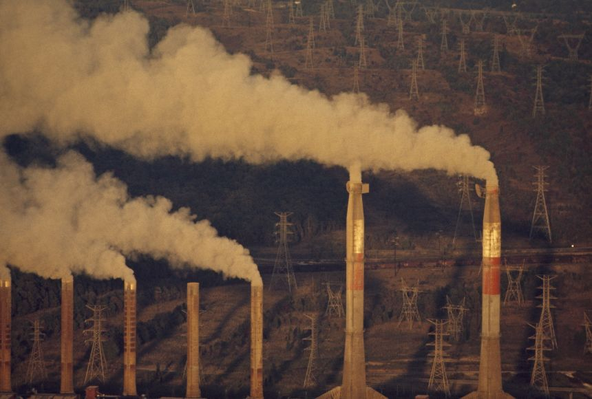

A Young and Talented Web Developer and
User Interface Designer
Global Warming

August 4, 2024
Reducing the amount of energy required to power, heat, and cool households, businesses, and industries would result from promoting and encouraging the
adoption of energy-efficient technologies.
This would be effective in lowering global warming since the energy consumed for cooling, heating, and power services in businesses, residences,
and industries is a major contributor to the issue. For instance, switching to low-carbon fuels and increasing miles per gallon would cut down
on the amount of heat-trapping emissions discharged into the atmosphere in the transportation sector.
Increasing renewable energy sources could also slow global warming. The great majority of the world's energy requirements might potentially be satisfied by
renewable energy sources, such as geothermal, solar, wind, and bioenergy.
lowering pollution would lead to job growth. In the United States, coal-fired power plants contribute around 25% of all greenhouse gas emissions,
while natural gas-fired power plants contribute 6%, according to a 2012 assessment by the Environmental Protection Agency.
In contrast, the majority of renewable energy sources emit little or no greenhouse gases.
In conclusion, enhancing energy efficiency and implementing renewable energy sources would slow global warming.
A lost Girl on Venus
August 1, 2024
Stranded. Yes, she was now the first person ever to land on Venus, but that was of little consequence.
Her name would be read by millions in school as the first to land here, but that celebrity would never actually be seen by her.
She looked at the control panel and knew there was nothing that would ever get it back into working order.
She was the first and it was not clear this would also be her last.
Out of another, I get a lovely view of the bay and a little private wharf belonging to the estate.
There is a beautiful shaded lane that runs down there from the house.
I always fancy I see people walking in these numerous paths and arbors, but John has cautioned me not to give way to fancy in the least.
He says that with my imaginative power and habit of story-making a nervous weakness like mine is sure to lead to all manner of excited fancies and that I ought to use my will and good sense to check the tendency.
So I try.